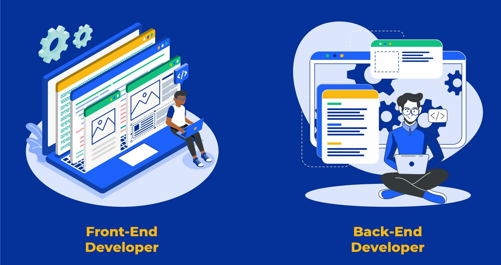

Nama saya Iskan Mustamir biasa dipanggil Iskan. Saya berasal dari Jogja dan sekarang menjadi mahasiswa prodi Teknologi Informasi 2020 UGM.
Saya memiliki ketertarikan kepada hal yang berhubungan teknologi, baik itu hardware maupun software. Jika memiliki waktu luang, saya akan mendengarkan musik, bermain game, atau melihat video Youtube.


Saya memiliki keingingan untuk masuk ke dalam Night Login Web Development Community (NWDC) karena beberapa hal. Pertama, saya ingin menambah ilmu dan pengetahuan saya khususnya di bidang web development. Kedua, saya ingin mendapatkan pengalaman lebih banyak di bidang web development. Ketiga, saya ingin menambah relasi dengan orang-orang yang juga memiliki minat yang sama dengan saya.

Front-End
Front-end dari sebuah website adalah bagian yang digunakan atau berinteraksi langsung dengan pengguna. Front-end developer bertugas untuk membuat dan menstruktur bagian website yang akan berinteraksi langsung dengan pengguna. Hal tersebut bertujuan agar pengguna dapat menggunakan websitenya dengan mudah dan nyaman. Bahasa pemrograman yang sering dijumpai di front-end website adalah HTML, CSS, dan Javascript. Sedangkan, framework yang sering digunakan adalah Bootstrap, Foundation, Backbone, AngularJS, and EmberJS.
Back-End
Back-end dari sebuah website adalah server, aplikasi, dan data base yang digunakan oleh website tersebut. Back-end developer bertugas untuk mengelola beberapa hal tersebut dan menjaga mereka dari kerusakan atau eror. Hal tersebut bertujuan agar website dapat berjalan dengan benar dan lancar sehingga tidak terjadi kendala atau permasalahan. Bahasa pemrograman yang biasanya dipakai oleh back-end developer adalah PHP, Ruby, Python, dan Java. Sedangkan, framework yang biasanya digunakan adalah Django dan Express.